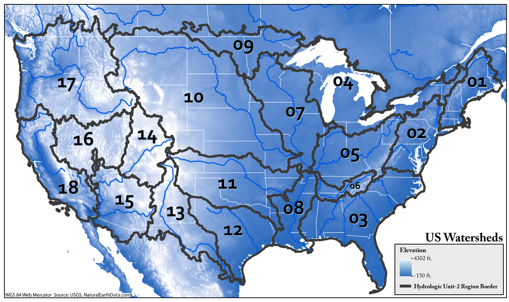
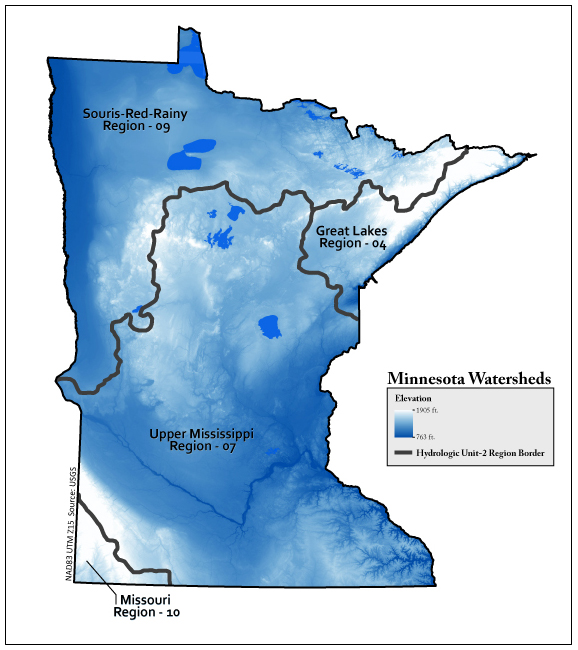
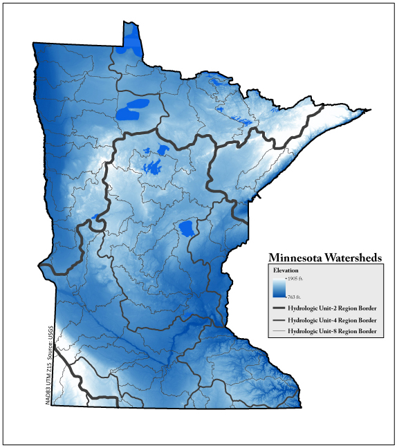

Image from http://www.co.greene.pa.us/
The United State Geological Survey (USGS) is a federal agency housed within the Department of Interior that deals with issues relating to water science. The USGS has no regulatory authority, rather it is a science organization that monitors the health of the environment. The organization is broken into four major science disciplines: biology, geography, geology, and hydrology. Watersheds are fundamental to these disciplines and more information can be found on their website. The USGS has developed a system for defining these areas: Seaber, 1987
The system the USGS developed for mapping and identifying is based on Hydrologic Unit Codes (HUCs) that increase in length as the size of the watershed gets smaller (Seaber, 1987).

21 watershed regions, also known as HUC-2 watersheds.
Minnesota contains the borders of four different HUC-2 watershed regions. The Souris-Red-Rainy Region (09) is based on the Red River, which borders Minnesota and the Dakotas. The Red River flows northerly and eventually terminates in Lake Winnipeg. The Great Lakes Region (04) is based on the chain of Great Lakes, which eventually terminates in the north Atlantic Ocean. The Upper Mississippi Region (07) is based on the Mississippi River, which eventually terminates in the Gulf of Mexico. The Missouri Region (10) is based on the Missouri River, which also terminates in the Gulf of Mexico.

Further segmentation of Minnesota HUC2 regions into HUC4 subregions shows how watershed subregions are based on increasingly-minor rivers, such as the Red (0902) and Rainy (0903) Rivers, the Minnesota (0702), St. Croix (0703), Mississippi Headwaters (0701), Des Moines (0710), and Black Root (0704) Rivers.
These HUC regions become increasingly fine-grained, down to the neighborhood level. Each unit level group is nested within its parent HUC region.

A detailed view of HUC8 Cataloging Units shows that in general, watershed boundaries are created along high-level elevations, which separate the Cataloging Units from each other.
Learn more about watersheds at water.usgs.gov
Aquatic Invasive Species (AIS)
Invasive species are non-native plants, animals, or microbes that are introduced into the environment by human activity. When there are few or no natural predators that can keep their numbers in check, invasives can outcompete native flora and fauna, proliferating quickly and causing great environmental and economic damage. Once introduced into a watershed (such as by a recreational watercraft that has not been thoroughly cleaned after being in infested waters), AIS can rapidly spread downstream. Read more about the effects of aquatic invasive species in Minnesota here.